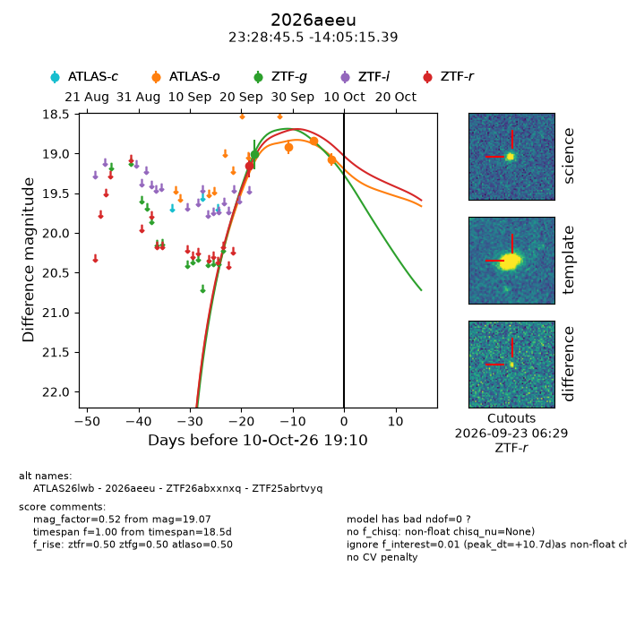
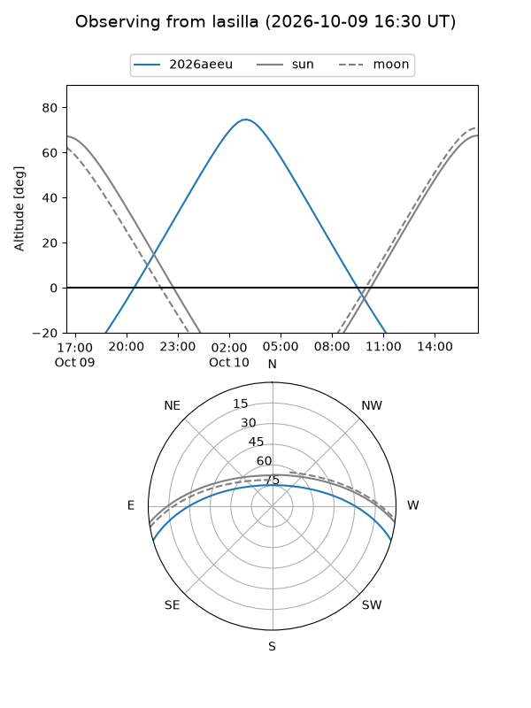
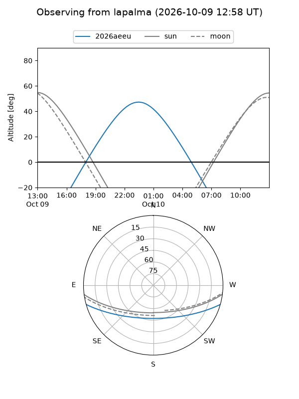
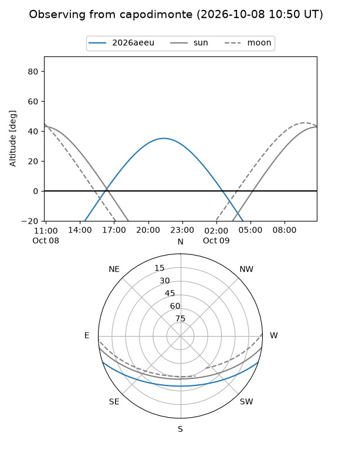
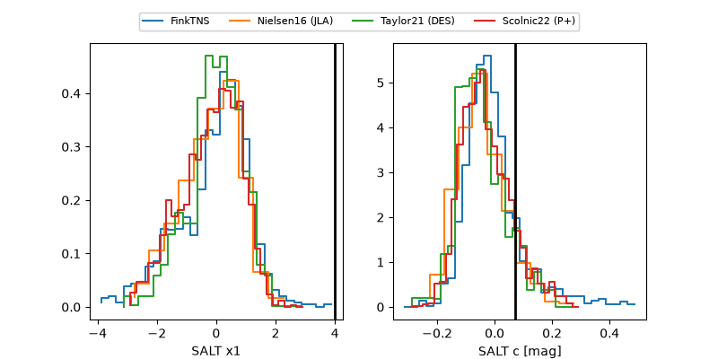

2026aeeu
Target 2026aeeu at 2026-10-10 19:11
Aliases and brokers:
FINK-ZTF: ztf.fink-portal.org/ZTF25abrtvyq
Lasair-ZTF: lasair-ztf.lsst.ac.uk/objects/ZTF25abrtvyq
ALeRCE-ZTF: alerce.online/object/ZTF25abrtvyq
YSE-PZ: ziggy.ucolick.org/yse/transient_detail/2026aeeu
TNS name: wis-tns.org/object/2026aeeu
Direct TNS query: direct search
alt names
ZTF25abrtvyq (ztf)
ZTF26abxxnxq (fink_ztf)
2026aeeu (tns,yse)
ATLAS26lwb (atlas)
Coordinates:
equatorial (ra, dec) = 352.1897,-14.08761
equatorial (HMS+DMS) = 23:28:45.53,-14:05:15.39
galactic (l, b) = (62.8703,-66.72880)
Flags:
peak dt: +10.7
Photometry:
last atlaso=19.07, ztfg=19.01, ztfr=19.15
3 atlaso, 1 ztfg, 1 ztfr detections
Lightcurve

Visibility



Additional plots
